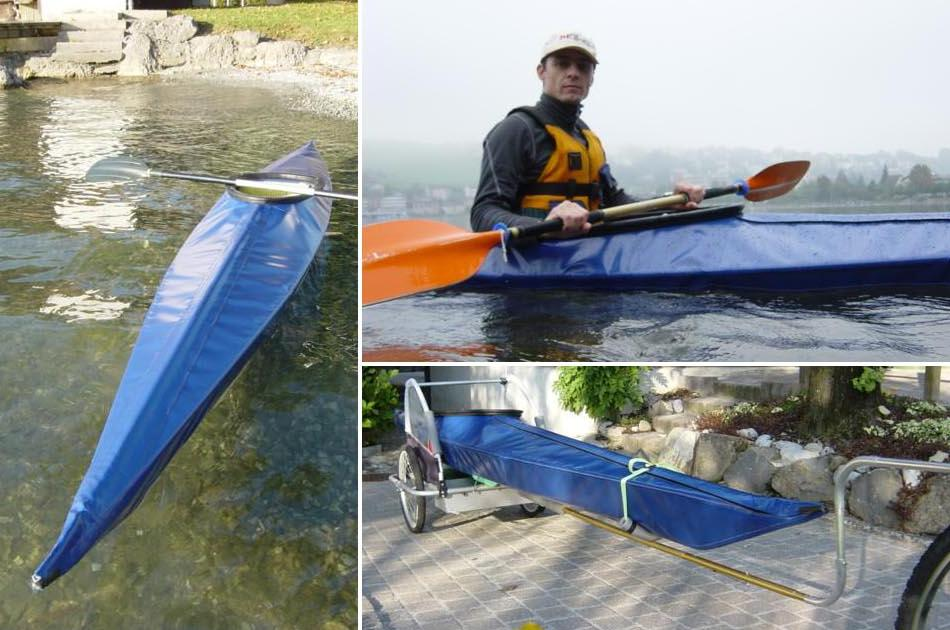

| (New) Sea Tour 15-R by Lance Reynolds (CH) | Menu Previous Page Next Page |
|
 Lance Reynolds from Switzerland and his newly completed Sea Tour 15-R folder. Lance built a kayak cart from a converted childs bicycle trailer for short trips to the lake.
|
|